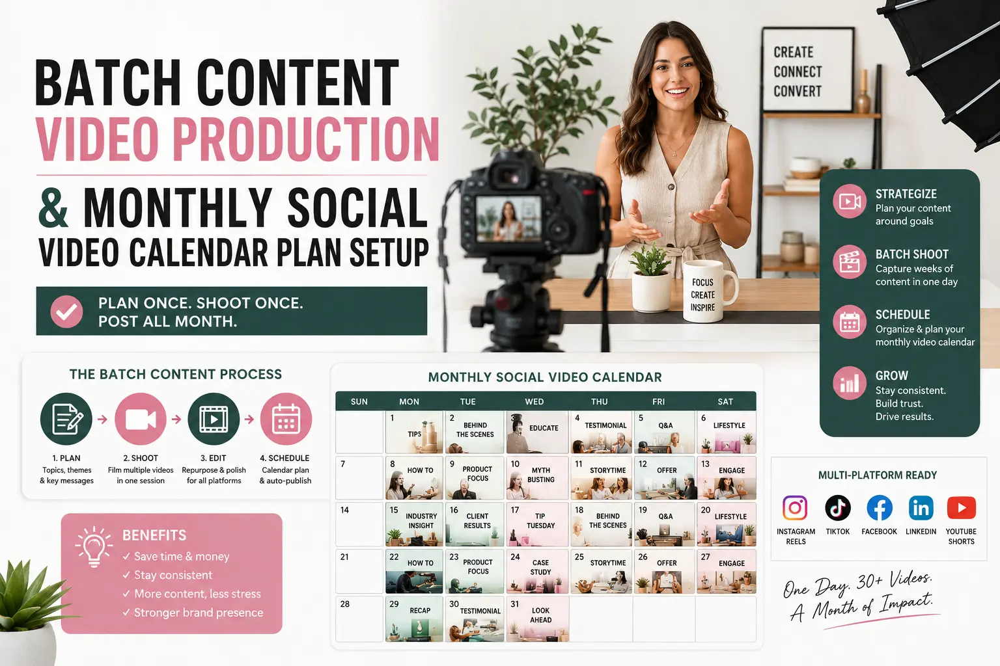
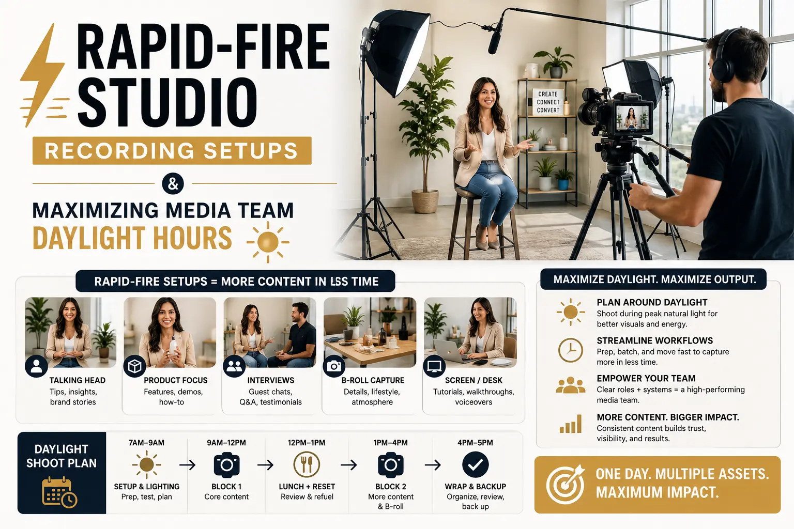

How Brands Can Batch-Shoot 30 Days of Video Assets in One 6-Hour Session
The Content Volume Problem Every Brand Faces
Social media algorithms in 2026 reward consistency above almost every other signal. Posting daily short-form video content on Instagram Reels, YouTube Shorts, and LinkedIn is no longer a competitive advantage — it is the baseline expectation for brands that want to remain visible in crowded feeds. But producing 30 individual pieces of video content — each requiring scripting, setup, lighting, filming, and editing — through 30 separate production sessions is operationally unsustainable for any brand that does not have a dedicated, full-time in-house video team.
The solution is Batch Content Video Production — a production methodology that consolidates an entire month's filming into a single, intensively planned 6-hour studio session. Instead of treating each video as an independent production project, batch shooting treats the entire month's content calendar as a single production run, sharing lighting setups, camera configurations, audio chains, and talent availability across all 30-plus deliverables.
This is the approach used by the most prolific content creators and the most efficient professional agencies — and when executed correctly, it produces higher-quality output at a fraction of the per-unit cost of individual daily shoots. The key is understanding that the value of batch production is not in cutting corners — it is in eliminating the redundant overhead that makes daily shooting so expensive and exhausting.
Pre-Production: The Monthly Calendar and Content Architecture
The entire batch production methodology depends on thorough pre-production planning. Without a complete content plan before the shoot day, the session will collapse into improvisation, producing fewer assets at lower quality. Building a monthly social video calendar plan is the non-negotiable first step:
- Map every deliverable to a posting date and platform. Create a 30-day calendar that assigns each video asset to a specific date, platform (Instagram Reels, YouTube Shorts, LinkedIn, X), and content category (educational, promotional, behind-the-scenes, testimonial, product showcase). This calendar becomes the production script for the shoot day.
- Write scripts or talking-point outlines for every segment. Each video should have either a full script (for teleprompter delivery) or a structured talking-point outline (for natural, conversational delivery). Scripts should be approved by all stakeholders before the shoot day — there is no time for approval cycles during the session.
- Plan wardrobe, props, and product staging by segment group. Group videos that share the same wardrobe, background, or product display together in the shooting schedule. This minimises the number of wardrobe changes and set reconfigurations, maximising recording time within each block.
- Create a minute-by-minute shoot-day schedule. Divide the 6-hour session into timed recording blocks — typically 10-15 minutes of recording separated by 5-minute transition windows. Assign each content piece to a specific time slot. Build in buffer time for retakes and a meal break that doubles as a major set or wardrobe change.
Maximised Studio Time
Maximizing media team daylight hours through structured scheduling ensures every minute of the 6-hour session produces usable content rather than being consumed by logistics and setup.
Content Multiplication
Short-Form Visual Asset Slicing in post-production transforms each recorded segment into multiple standalone clips, multiplying the usable output from every recording block.
Consistent Visual Identity
Maintaining a single lighting, audio, and framing configuration across all segments builds a corporate short-form asset catalog with a unified, professional visual identity.
Cost Efficiency
Consolidating production into High-volume content media days reduces per-unit production costs by 60-80% compared to filming each piece individually across separate sessions.

The Shoot Day: Structured Execution and Rapid-Fire Recording
On the shoot day itself, every element of the production should be pre-decided, pre-configured, and ready to execute. The role of rapid-fire studio recording setups is to eliminate all decision-making from the shoot day, allowing the team to focus exclusively on performance and recording:
- Block 1 — Technical Setup (45 minutes before talent arrives). The production crew arrives 45 minutes before the talent to configure all lighting, audio, camera, and teleprompter equipment. Lighting should be set once and maintained across all segments — use a consistent three-point lighting setup (key, fill, and rim) that flatters the speaker and matches the brand's visual tone. Audio should be tested with a clip-on lavalier and a backup shotgun microphone, both recording simultaneously.
- Block 2 — Morning Recording Session (3 hours). Begin recording immediately when the talent arrives. Execute segments in groups that share the same wardrobe and set configuration. Each 10-15-minute recording block should produce 2-3 individual content pieces. Between groups, allow 5-minute transition windows for wardrobe changes, prop adjustments, and teleprompter script updates.
- Block 3 — Lunch and Major Reset (45 minutes). Use the lunch break to execute a major wardrobe or set change — switching backgrounds, swapping products, or transitioning from indoor to outdoor settings. This break should be the only significant reconfiguration in the entire day.
- Block 4 — Afternoon Recording Session (2.5 hours). Resume recording with the new configuration. Prioritise the most energy-intensive content (motivational pieces, high-enthusiasm product showcases) for the first hour after lunch while the talent's energy is refreshed. Schedule lower-energy content (educational explainers, seated discussions) for the final hour when fatigue may affect performance.
Post-Production: Slicing, Formatting, and Cataloguing
The post-production workflow is where the batch production model delivers its highest return — through systematic Short-Form Visual Asset Slicing, each recorded segment is cut, formatted, and catalogued into multiple individual assets:
Primary Cuts and Variations
- Edit each recorded segment into its primary 30-60-second short-form piece, applying brand intros, end cards, and caption overlays.
- Extract 15-second highlight clips from each segment for use as teaser posts, story content, or ad creatives.
- Pull still-frame thumbnails with text overlays for carousel posts and email marketing headers.
- Create a 30-second compilation reel using highlight moments from multiple segments for a monthly recap post.
Platform-Specific Formatting
- Export vertical 9:16 versions for Instagram Reels, YouTube Shorts, and TikTok with platform-native caption styles.
- Export horizontal 16:9 versions for LinkedIn, YouTube standard, and website embedding.
- Export square 1:1 versions for LinkedIn feed posts and Facebook carousel ads.
- Ensure all exports include embedded captions — 85% of mobile social video is consumed with sound off.
Asset Cataloguing and Scheduling
- Organise all finished assets into a cloud-based corporate short-form asset catalog with consistent naming conventions (date-platform-topic-version).
- Map each asset to its assigned date in the content calendar and schedule it in the brand's social media management tool.
- Archive all raw footage and project files for potential re-editing, compilation, or long-form repurposing later.
- Run a final quality check across all scheduled posts to confirm captions, hashtags, and posting times are correct.
Working with a Professional Production Partner
For brands that do not have in-house video production capabilities, partnering with a professional social media content creation agency that specialises in batch production is the most efficient path to consistent, high-quality short-form content at scale.
A professional agency manages every stage of the batch workflow — from building the monthly social video calendar plan and writing scripts, to operating the studio on shoot day, to delivering the full month's assets formatted, captioned, and scheduled within 72 hours of the session. The brand's only responsibility is showing up with the talent, the products, and the approved scripts.
This model is particularly effective for scaling High-volume content media days beyond a single month — by scheduling batch sessions quarterly, brands build a rolling library of content that can be remixed, re-captioned, and redistributed across seasons and campaigns.

Conclusion
Batch Content Video Production is the single most effective methodology for brands that need to maintain daily social video presence without daily production overhead. By consolidating 30 days of content into a single 6-hour session, brands eliminate redundant setup costs, maintain visual consistency, and build a professional corporate short-form asset catalog that serves their content calendar for an entire month.
The methodology requires rigorous pre-production planning — a complete monthly social video calendar plan, pre-approved scripts, and a minute-by-minute shoot schedule — followed by disciplined rapid-fire studio recording setups on shoot day and systematic Short-Form Visual Asset Slicing in post-production.
At The PhD Ads, we run High-volume content media days for Indian brands — managing every stage from content calendar creation through studio execution to final asset delivery. Our batch production workflow is designed for maximizing media team daylight hours and delivering broadcast-quality short-form content at scale.
Key Topics
Produce a Full Month of Content in a Single Day
At The PhD Ads, we plan, film, edit, and deliver 30+ short-form video assets in a single structured studio session — giving your brand a full month of professional social content from one production day.
Email: team@e2o.in